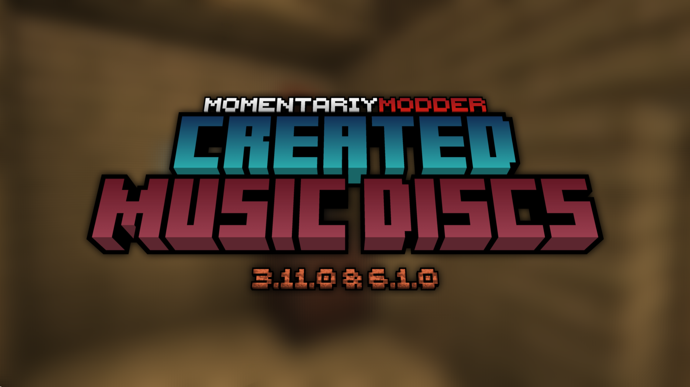

<!--
MomentariyModder Website 7.0.0 by MomentariyModder
The source code is available on GitHub!
-->

<!DOCTYPE html>
<html lang="en">
<head>
  <link rel="icon" href="../img/themes/active/favicon.png">
  <title>Created Music Discs 3.11.0 & 6.1.0: Music Disc Bag Update | Blog | MomentariyModder</title>
  <meta name="viewport" content="width=device-width, initial-scale=1, maximum-scale=1" />
  <meta name="title" content="Created Music Discs 3.11.0 & 6.1.0: Music Disc Bag Update | Blog | MomentariyModder">
  <meta name="description" content="Welcome to my website! I am MomentariyModder, or as my friends and acquaintances often call me, Modder. I'm 20 years old, and I'm from Belarus (a small country in Europe bordering Russia and Ukraine). I also like to create almost any content for Minecraft, that is: mods, maps, resource packs, servers.">
  <meta name="keywords" content="Minecraft, Mods, MomentariyModder">
  <meta name="theme-color" content="#4bb4f1">


  <script src="https://code.jquery.com/jquery-3.3.1.min.js"></script>
  <script src="https://cdn.jsdelivr.net/npm/handlebars@latest/dist/handlebars.js"></script>
  <script src="https://mcapi.us/scripts/minecraft.min.js"></script>
  <script src="../js/main.js"></script>
  <script src="../config.js"></script>
  <script src="../js/lightbox.min.js"></script>
  <script src="https://cdn.jsdelivr.net/npm/@widgetbot/crate@3" async defer>
  new Crate({
    server: '696094539823448085',
    channel: '1156033421940891688'
  })
  </script>
  
  <script>tosAgreed = true</script>
  
  <link rel="stylesheet" href="https://cdnjs.cloudflare.com/ajax/libs/font-awesome/6.7.1/css/all.min.css"/>
  <link rel="stylesheet" href="../css/style.css">
  <link rel="stylesheet" href="../config.css">
  <link href="../css/lightbox.css" rel="stylesheet" media="all">

</head>


<body>

  <div id="target"></div>

  <script id="template" type="text/x-handlebars-template">

  <header>
    <div class="hero" id="hero">
      <a href="#!"><h1 style="padding-top: 3%;"></h1></a>
    <p> </p>
    <div class="news-card" align="center">
	  <a href="../" class="btn"><i class="fa-solid fa-house"></i> Home</a>
      <a href="../blog" class="btn"><i class="fa-solid fa-newspaper"></i> Blog</a>
	  <a href="#links" class="btn"><i class="fa-solid fa-share"></i> Links</a>
    </div>
	<p> </p>
	</div>
  </header>
  
  <section class="dark" id="blog">
	<h1><i class="fa-solid fa-newspaper"></i> Blog</h1>
    <div id="news">
	<div class="news-card" align="center">
	<a>UPDATES</a><br>
	<a href="../img/blog/cmd-3.11.0-6.1.0/head.png" data-lightbox="roadtrip"></a>
	<h1 align="center">Created Music Discs 3.11.0 & 6.1.0: Music Disc Bag Update</h1>
	<i>14.05.2025, 16:30</i><br>
	</div>
	<p>
	Hello to all readers of this post!<br><br>
	Today I present the long awaited update of Created Music Discs mod 3.11.0 for 1.20.1 and 6.1.0 for 1.21.1 respectively!<br><br>
	<h2>Additions</h2>
	<h3>Compatible</h3>
	Compatibility with the following mods has been added:<br>
	- Caverns & Chasms (by Team Abnormals)<br>
	- Concoction! (by Sebsish, woofyboo)<br>
	- Confluence: Otherworld (by westernat233)<br>
	- DivineRPG (by velocityraptor-real)<br>
	- Iron's Spells 'n Spellbooks (by Iron431)<br>
	- Nether Dungeons (by Team Durt)<br>
	- Rediscovered (by ModdingLegacy)<br>
	- Ribbits: Croaks (by Jonahanoj)<br>
	- Rise of the Gecko King (by GeckoKingYT)<br>
	- Sweety's Archaeology (by Sweetygamer2)<br>
	- The Broken Script (by wendigodrip)<br>
	- The Conjurer (by ModdingLegacy)<br>
	- The Graveyard - Resurrected (by Moomba)<br>
	- Valoria (by IriDark)<br>
	<h2>Changes</h2>
	<h3>Items</h3>
	<b>Music Disc Bag</b><br>
	- Item texture and GUI has been updated.<br>
	<br>
	- Can be dyed into 16 colors.<br>
	<br><br>
	<b>Music Disk Base</b><br>
	- Texture has been updated.<br>
	<br><br>
	<h3>Compatible</h3>
	Compatibility with the following mods has been updated:<br>
	- Eternal Starlight (by LeoMinecraftModding)<br>
	- Eternal Tales (by Unknown_Raccoon)<br>
	- Keepers of the Stones II (by Environment_Studios)<br>
	- LUMINOUS (by RipleysMods)<br>
	- LUMINOUS: BEASTS (by RipleysMods)<br>
	- Sully's Mod (by GoesBySully)<br>
	- The Deep Void (by Mortius)<br>
	- Wizard's Reborn (by MaxBogomol)<br>
	<h2>Note</h2>
	<h3>Support for Minecraft 1.20.1</h3>
	Version 1.20.1 has become one of the most popular modding versions, along with the likes of: 1.7.10, 1.12.2 and 1.16.5. However, now it has started to lose its popularity, more and more mods stop supporting it and move to 1.21.1. I supported it for 1 year and 8 months. And as you may have realised the key word is ‘supported’. This version of Created Music Discs will be the last for 1.20.1. It became difficult for me to support two versions at the same time. So I made the decision to finish with 1.20.1 and move on. I will still continue to support 1.21.1. In the future I plan to make a port to 1.21.5/1.21.6 as well.<br><br>
	Download this update: <a href="../projects/created-music-discs">Page</a><br>
	Report a bug or suggest new ideas here: <a href="../forum">Forum</a>
	</p>
	<p align="center"><i class="fa-solid fa-user"></i> MomentariyModder (Author)</p>
	</div>
	<p> </p>
	<div id="news">
	<div class="news-card" align="center">
	<h2>Comments will be back soon!</h2>
    </div>
    </div>	
  </section>
  <section class="dark">
	<div class="news-card" align="center">
	<a href="../blog/mma-8.2.0" class="btn2"><i class="fa-solid fa-arrow-left"></i> Previous post</a>
	<a href="../blog" class="btn2"><i class="fa-solid fa-newspaper"></i> Back to Blog</a>
	<a href="../blog/important-announcements" class="btn2"><i class="fa-solid fa-arrow-right"></i> Next post</a> 
	</div>
  </section>
  
  <section class="light">
    <h1><i class="fa-solid fa-share"></i> Links</h1>
    <div id="links" align="center">
	  <a href="https://discord.com/invite/9XqgjRd"></a> 
	  <a href="https://t.me/momentariymoddertgk"></a> 
	  <a href="https://twitter.com/momentariymoder"></a>	 
	  <a href="https://bsky.app/profile/momentariymodder.bsky.social"></a>
	  <a href="https://www.curseforge.com/members/momentariymodder"></a> 
	  <a href="https://modrinth.com/user/momentariymodder"></a> 
	  <a href="https://github.com/MomentariyModder"></a>
	  <a href="https://patreon.com/momentariymodder"></a>
	  <a href="https://boosty.to/momentariymodder"></a>
	  <a href="https://ko-fi.com/momentariymodder"></a>
	  <a href="https://www.buymeacoffee.com/momentariymodder"></a>
	  <a href="https://www.donationalerts.com/r/momentariymodder"></a>
    </div>
  </section>
  
  
  <footer>
    <a>&copy; {{server_port}} {{server_name}}. All Rights Reserved.</br>{{server_name}} is not affiliated with or endorsed by Mojang Studios or Microsoft<br>{{server_ip}}</a>
	<a></a>
	
  </footer>
  </script>
  <script src="../js/license.js"></script>
  
</body>
</html>